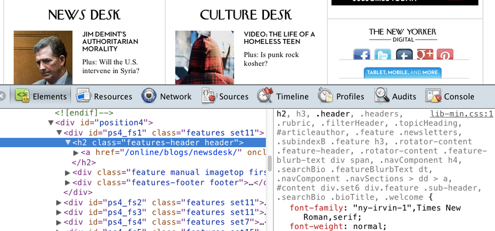
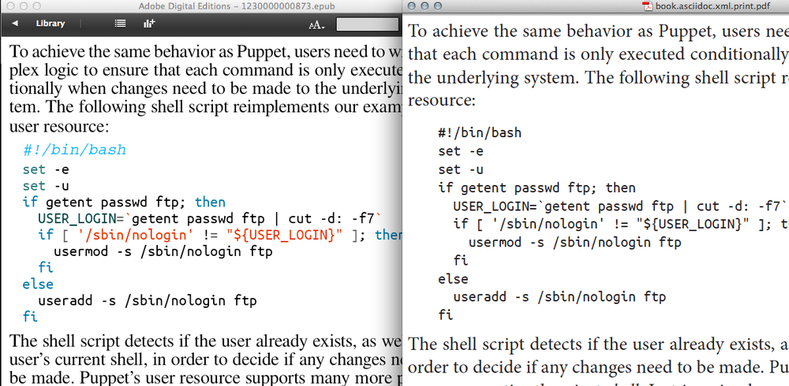
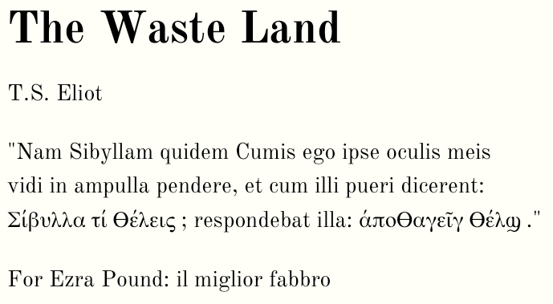
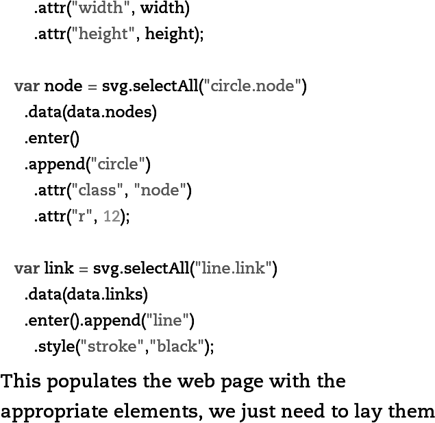

When you “embed” a font within an EPUB file, you include single or multiple font files in the EPUB package. You must then include references to that font within the CSS and the OPF manifest of the EPUB so that the font is rendered across reading systems. Sounds simple enough, right? From a technical perspective, embedding fonts is simple, and the EPUB 3 specification leaves little room for ambiguity on this topic. It is a straightforward enough process that a technical overview can be summarized succinctly in a single blog post.[1]
While embedding fonts in an EPUB file is simple enough, how reading systems support embedding has been and remains spotty and inconsistent, often frustratingly so. Also, while embedding fonts is trivial, adding the required obfuscation—required by most commercial font foundries—is much less so. Also, licensing for embedding in general can be an administrative and technical nightmare.
This chapter does not argue for or against embedding fonts, or perhaps more accurately, it argues for both. In doing so, the chapter aims to give you the information that you need to decide for yourself what the “best practice” is around font embedding, which will be influenced by a number of factors, including—perhaps most importantly—the kind of content that you publish. There is not one reason why you might want to embed a font in an EPUB—your reasons may range from capturing a particular aesthetic to fit the content, to creating a consistent brand across your product lines, to addressing more pragmatic concerns such as embedding for unusual or specialized glyphs that are unlikely to be found in a standard system font.
Because of these potential complexities, this chapter—instead of diving immediately into the technical specifications—starts by asking you to consider your reasons for embedding. From there, you’ll see how font embedding has changed in the EPUB 3 specification from 2.0.1, and you’ll learn how to embed, obfuscate, and style fonts. Finally, you’ll gain an understanding of the various font licensing options and how those options are evolving as digital book reading systems mature.
Embedding fonts in EPUB is optional. This section looks at the pros and cons of embedding.
When you decide to embed fonts in your EPUB files, you are effectively signing yourself up for added technical and administrative overhead. Before you take on that extra work, it makes sense to ask yourself whether embedding fonts is a good idea at all. This chapter is part of a larger collection of EPUB 3 best practices, and the “best practice” in this case may be to not embed fonts and rely on reading system fonts exclusively. Let’s look at the reasons you might want to not embed fonts in your EPUB.
Reading system support of embedded fonts in EPUB 2.0.1 has been all over the place. Systems that support it have done so poorly, oddly, and inconsistently. These idiosyncrasies have been well documented on Liz Castro’s blog, Pigs, Gourds, and Wikis. For example, here is a post in which Liz describes working around the inability of iBooks to render correctly a simple bold variant by adding -webkit-text-stroke to the CSS. If you’re an ebook developer, read the details of that post at your own risk: you won’t know if you should laugh or cry.
This history of buggy, inconsistent, or sometimes non-existent support in reading systems has persisted perhaps in part because of the squishiness of the 2.0.1 specification:
It is advisable for a Reading System to support the OpenType font format, but this is not a conformance requirement; a reading system may support no embedded font formats at all.
And while it’s encouraging that the EPUB 3 specification takes a much clearer stance on the issue of reading system support for font embedding—requiring support for OpenType and WOFF fonts—the precedence for poor support has been established. There’s been little indication that reading system vendors are likely to get their acts together anytime soon.
Even more discouraging, perhaps, is that even if a reading system supports font embedding correctly and consistently, the user may never see those fonts because many reading systems default to system fonts. The embedded fonts must be toggled on, and that toggle can be buried in a menu option that a user may never think to access. If a reading system does default to the embedded fonts, the user can override those fonts at any time, which can sometimes lead to unexpected and undesirable results.
Figure 4-1 and Figure 4-2 show an example of a reading system behaving oddly. In Figure 4-1, the Google Play Books iOS app defaults to the embedded font, which in this case is UbuntuMono. Great!
Figure 4-2 shows what happens when a user selects another font. Note that the user’s choice of Georgia overrides UbuntuMono, but strangely, the bold variant of UbuntuMono remains.
Ideally, in this case, we’d want Google Play Books to override the body font but leave the <pre> block as is, which is exactly what iBooks version 3.0.2 does. While it’s great that iBooks does the right thing in this case (but see Liz Castro’s post above for an example of iBooks exhibiting its own quirks), the fact that you, as an ebook developer, can expect such varying behavior across reading systems should really make you question your motives for embedding and ask if your time might be better spent on other tasks (see Chapter 9, for example).
If you’re in the business of creating EPUB files, one reason to be wary of embedding fonts is that it makes your job harder. Embedding creates potentially unnecessary complexity in the following ways:
For much published content, system reader fonts function well and, let’s face it, look perfectly fine for most of your readers. Keeping things simple and not embedding may make the most sense in many cases.
Any best practice consideration around EPUB font embedding should take into account that reading device makers routinely work with font foundries and typography experts to identify and then customize and optimize fonts for the screens of those devices.
Publishers and content creators can take advantage of these optimized fonts by foregoing embedding and relying instead strictly on device system fonts. Potentially, you could even target particular system fonts in the EPUB of your CSS (see How to Embed Fonts to learn how), although that strategy means you will probably end up optimizing for a single or small handful of devices that include those particular fonts.
Still, given that the clearest and best typefaces for that particular reading system already reside on the device, why would you want to override those typefaces by embedding your own? Arguably, the best experience for your readers can be found via the system fonts. See Embedding to be forward-thinking for the counterargument to this line of thinking.
When you embed a font, you are making the EPUB file larger—an obvious point, but one that shouldn’t be readily dismissed. If you publish and sell your ebook into digital retail markets, your customers may attempt to purchase it over a slower network connection, such as a cellular phone network. Embedded fonts can make a significant impact on file size, which could potentially lead to a customer passing on an ebook purchase or becoming frustrated when the download takes too long.
On digital reading forums such as MobileRead, it is not uncommon to read complaints of ebook “bloat” in the context of embedded fonts, and posters on the forum share tips on the quickest way to remove embedded fonts.
One way you can minimize the impact font embedding has on file size is to use subsetting, the details of which are described in Subsetting a Font.
There are plenty of very good reasons why you may want to embed fonts in your EPUB files. This section examines when the best practice suggests to embed.
As described in Historically, reading system support for font embedding has been poor and inconsistent, EPUB reading system support for font embedding through the end of 2012 has been something of a mess. Given these circumstances, no one would blame you if you decided to throw up your hands and forget the whole thing. However, by giving up now, you may be consigning yourself to future work if and when reading systems finally provide proper support. By working through the technical and administrative complexities of font embedding today, your EPUB file will be ready to take advantage of support when it comes. As the reading systems improve their rendering platforms, the typography in your ebooks will improve, too.
Furthermore, embedding now sends a message to device makers that you value good typography and creative control. It lets them know that you are not ready to cede a lifetime of hard-won typographical knowledge and expertise to device and reading system developers who lack that expertise and have little idea how it affects your content, brand, and readership. The publishers and content creators that go the extra mile to license and embed fonts, knowing that they probably won’t be supported today, let these developers know that support for font embedding is important and reading system support should be a priority.
Device makers have already done the work for you argues against font embedding because device makers normally include system fonts that are optimized for that device. However, this argument is potentially flawed for two reasons:
Considered in light of the above, taking the time to craft, optimize for digital, and embed a font is the responsible thing to do because it contributes to, improves, and influences the emerging digital reading ecosystems. On all digital platforms (be they ereading systems or the Web in general), typography has a long way to go before it catches up to print. One way that traditional publishers can help move it forward is to embed chosen fonts skillfully and carefully, regardless of whether device makers know how to treat those fonts or not.
Another reason you might consider embedding fonts is to create a consistent look and feel across the digital and print versions of your product. By taking this approach, you are effectively creating a kind of “brand” for your publication or series of publications. Or to use Craig Mod’s term, you are “platforming books,” part of which is to create a “unified design” across digital and print.
Craig’s description of a unified design is judicious, smart, and practical. He doesn’t suggest slavishly and mindlessly trying to re-create the print product in digital and in fact warns against “forced representations.” Rather, he suggests letting each medium do what it does best while taking steps to unify the design across platforms, part of which includes typography.
Craig (with help from O’Reilly’s own Ron Bilodeau) goes all out in his Art Space Tokyo project and embeds fonts for both body and headings, but you could achieve a similar effect by scaling back and including a font for the headings only. Effective examples of using an embedded font for headings can be found across the Web. Figure 4-3 shows one example from the New Yorker website, which serves up via Typekit the magazine’s iconographic and immediately recognizable NY Irvin font for the headings.
The New Yorker’s use of its trademark font on its website is a simple but effective way of creating a “unified design” across the print and digital products. Employing a similar strategy around font embedding in your EPUB files can help you create a consistent look and feel across the various mediums in which your publications are sold.

Figure 4-3. Screenshot from newyorker.com showing the NY Irvin font as well the browser console with the CSS referencing that font
At O’Reilly, we take a slightly different approach—we use the same code font in the print and digital products. Because O’Reilly publishes books of a technical nature, the code examples are really at the heart of many of our books, so using the same typeface in digital and print captures that “unified design” idea in a subtle way. However, there is one significant difference between the digital and print versions of the font, as Figure 4-4 demonstrates.

Figure 4-4. The code font that O’Reilly uses is consistent across print and digital, but the digital is in color
The print version of the code is in one color (black, obviously), while we add colored syntax highlighting to digital versions of that same code, which makes the code easier to parse. Figure 4-4 shows the single color and multicolor code blocks side by side,[3] EPUB on the left and print PDF on the right. In this way, we are both embedding and enhancing a typeface.
Glyph coverage in most reading system fonts for non-Latin or even Latin-1 Supplement and Latin Extended is spotty at best. If your EPUB text includes non-Latin or Extended Latin characters, you should consider embedding fonts.
As an example of where font embedding can help with glyph coverage, you can experiment with one of the EPUB 3 sample files that the IDPF provides on a Google project page. In the images that follow, I used the EPUB file named wasteland-otf-20120118.epub, Eliot’s The Waste Land, which begins with an epigraph taken from Satyricon and uses a mix of Latin and Greek characters. The EPUB includes an embedded font named OldStandard, which does a pretty good job of covering Greek characters in the epigraph. Figure 4-5 shows a screenshot in Adobe Digital Editions (ADE), version 2.0.6[4] of the epigraph.
As you can see in Figure 4-5, one character[5] doesn’t render and is replaced with a small rectangle. Not bad, and it could be much worse. Figure 4-6 shows what the same EPUB looks like without an embedded font.
Experimenting further, you can seek out a font that provides complete coverage for Eliot’s epigraph. To test this, I embedded the OTF version of FreeSerif in the EPUB, which created the results that you see in Figure 4-7.
Results will vary across reading systems, of course. If you decide to embed, you should plan to test in the reading systems that you care about. See Subsetting a Font for some ideas on how you could further optimize font embedding for better glyph coverage.

Figure 4-7. The complete epigraph, courtesy of the rich set of glyphs found in FreeSerif
One thing I would warn against is assuming that, because you are using non-Latin characters, you must automatically embed. As Murata Makoto explains in Chapter 8, some reading systems will look for and attempt to honor the xml:lang and/or lang attribute, as described in detail on the WC3’s Internationalization Best Practices page. Chapter 8 includes examples of how to use each attribute in accordance with the EPUB 3 specification.
Anecdotally, earlier this year, I discovered that the xml:lang worked surprisingly well while assembling an EPUB that used simplified Chinese characters for all text that wasn’t code (Figure 4-8).
The rendering shown in Figure 4-8 is accomplished with a combination xml:lang and UTF-8, and no embedded fonts. The text renders equally well in iBooks, Adobe Digital Editions, and (after conversion via KindleGen) KF8.
If you’re wondering how adding xml:lang would affect the Greek examples from The Waste Land earlier in this section, the EPUB in fact includes the xml:lang and lang attributes (crack it open and take a look at the file named wasteland-content.xhtml), but they seem to have no effect. Such inconsistent behavior across reading systems is why you should assume nothing and always be sure to test and build QA into your process.
This section has only scratched the surface of what you should consider if you’re working with non-Latin character sets. See Chapter 8 for coverage of advanced topics such as proper encodings, vertical writing, writing modes, and ruby.
You might consider embedding a font if you publish specialized or highly technical content. For example, if you publish content with complex mathematical equations, most reading systems are not equipped with the fonts needed to display the equations correctly. Now that the EPUB specification has support for MathML, as explained in MathML, the opportunity exists to couple semantically marked-up equations with a robust, math-centric font, such as the STIX Font—once the reading systems support these features consistently, of course.
As you’ve seen in previous examples in this chapter, we at O’Reilly routinely embed UbuntuMono for code listings. Because O’Reilly is a technical publisher, having a good code font is an important part of the reader experience. We choose to embed four variants of this font because most reading systems have a single monospace font, which—if it exists at all—is almost invariably Courier New. UbuntuMono is more condensed, has much better glyph coverage, and creates a uniform design with the print product, as described in Embedding to create a consistent look and feel across “platforms”. Some reading systems (Figure 4-9) do not include a monospace font at all, so embedding one becomes crucial in this case.

Figure 4-9. While it is not technically an EPUB reader, the Kindle Paperwhite is an example of a recently released reading device with no monospace font—not good if you’re a technical publisher
When reading systems don’t include the fonts you need to present your technical or specialized content in the expected way, you have almost no choice but to embed a font.
When considering your options on how to address missing or specialized glyphs, you might wonder, “Why not just use an image?” It’s true that you can swap in an image of a character instead of embedding a fallback font, but I don’t recommend it as the “best practice.” Once you set a character as an image, that character is unfindable in search, typographically ugly and uneven, and useless for accessibility (see Chapter 9 for more on accessibility). For these reasons, using an image for an unusual character should be an absolute last resort.
Font embedding hasn’t changed significantly from 2.0.1 in the EPUB 3 specification, but as described on the IPDF’s website, there are a few notable revisions:
Diving into the EPUB 3 specification further, you’ll find a few other tidbits that are worth learning and keeping in mind in the context of font embedding:
@font-faceThe EPUB 2.0.1 specification indicates that the following descriptors must be supported:
font-family |
font-style |
font-variant |
font-weight |
font-size |
src |
It does not, however, require support for @font-face, which is necessary for font embedding. EPUB 3 fixes that problem while requiring reading system support for the same CSS descriptors with the exception of font-variant, which is removed from the specification as a requirement, and unicode-range, which is added as a requirement.[6]
The EPUB 3 specification identifies embedded fonts as a Foreign Resource, which in turn is defined as “A Publication Resource that is not a Core Media Type.” Anything that is designated a Foreign Resource requires at least one fallback. For embedded fonts, providing a fallback means that the reading system must use the W3C rules for matching font styles.
As you can read about in the specification itself, EPUB 3 guards against CSS specifications that are in progress and will potentially change by establishing a CSS Profile, which is employed with the -epub- prefix. See CSS Text Level 3 to learn about the -epub- prefixed properties relating to styling text, such as -epub-hyphens* and -epub-line-break.
The method for embedding a font in an EPUB hasn’t changed since 2.0.1 in the EPUB 3 specification. There are three basic steps:
<manifest>.
@font-face in the EPUB CSS to reference the font.
Optionally, you can add (and may be required to add, depending on your the license) font obfuscation and use font subsetting. Let’s look at the required steps first. Again, I’m going to use an example from the EPUB samples that the IPDF provides. Specifically, I’ll use wasteland-woff-20120118.epub.
You’ll want to use a font in either the OTF or WOFF format. If you have a font in another format (e.g., TTF), consider converting the font to one of the supported formats or check if your font foundry has the font in one of the supported formats.
You may find during your testing that other font formats, such as TTF or even SVG, seem to work just fine in some reading systems. The EPUB 3 specification, however, now requires reading system support for OTF and WOFF, so why take chances on other formats? Your best option is to use OTF or WOFF. In her blog post on this same topic, Liza Daly suggests using FontForge (which supports both OTF and WOFF) for conversion. We’ve used this method at O’Reilly, and it has worked well.
To see an example of a font embedded in an EPUB, change the file extension of the wasteland-woff-20120118.epub file to .zip, and use your favorite ZIP utility to unzip the file. In this example, the EPUB creator includes three variants of the font face OldStandard.
The manifest exists in the OPF file. Open wasteland.opf with any text editor, and you can see the manifest and how each font file is referenced:
<manifest>...<itemid="css-fonts"href="fonts.css"media-type="text/css"/><itemid="css-night"href="wasteland-night.css"media-type="text/css"/><itemid="font.OldStandard.regular"href="OldStandard-Regular.woff"media-type="application/font-woff"/><itemid="font.OldStandard.italic"href="OldStandard-Italic.woff"media-type="application/font-woff"/><itemid="font.OldStandard.bold"href="OldStandard-Bold.woff"media-type="application/font-woff"/>...</manifest>
The manifest includes references to the fonts themselves as well as to the CSS that declares those fonts (see the next section). The id is any unique identifier that you wish to use. Just make sure not to use an identifier that already exists in the manifest. The href points to the file itself. In this case, the file is in the top directory, but if you wish, you can just as easily add the files to a folder named “fonts,” in which case you’d just need to update the href accordingly:
href="fonts/OldStandard-Regular.woff"
Finally, there is the media-type, which is predefined based on the font format. WOFF uses application/font-woff, while OTF takes application/vnd.ms-opentype.
Once you’ve added the font file to the manifest, you need to reference it in the CSS file. Using that same EPUB as an example, open the fonts.css file in any text editor. Each font file is declared with the @font-face rule. Here’s one example:
@font-face{font-family:'OldStandard';font-weight:normal;font-style:normal;src:url(OldStandard-Regular.woff)format('woff');}
The name you used for the font-family is arbitrary, but it seems wise to use the name of the font. That same font-family name can be reused for the different variants. So for the boldface version of font, the EPUB creator adds:
@font-face{font-family:'OldStandard';font-weight:bold;font-style:normal;src:url(OldStandard-Bold.woff)format('woff');}
Note that url points to the file itself, so if you were to move it to another directory, you’d need to update the url, too. For example, if the file resides in a directory named “fonts,” you’d update the url to the following:
src:url(fonts/OldStandard-Regular.woff)format('woff');
Now that you’ve declared the font, you need to tell the reading system where to apply it. To see where the font is being applied in the Wasteland example, open the file named wasteland.css. The font is used for the body of the XHTML file that exists in the EPUB:
body{margin-left:6em;margin-right:16em;color:black;/* use sans-serif as fallback to make the difference obvious */font-family:'OldStandard',sans-serif;background-color:rgb(255,255,245);line-height:1.5em;}
As you can see in this example, the EPUB creator uses the sans-serif system font as a fallback, and he has given his reason for doing so in a comment. OldStandard is a serif font, so he’s using sans-serif so that he can easily spot instances in which OldStandard is missing a glyph and is falling back to the system font. In Embedding for improved glyph coverage, you saw an example of a glyph that was missing from both OldStandard and the sans-serif system font. I had to embed a different font altogether to get full coverage.
If you’re embedding a font strictly as a fallback (and not for aesthetic or other reasons), you could reverse the order so that the system font is used by default, but the embedded font in employed as the fallback:
font-family:serif,'DejaVuSerif';
DejaVu is a good fallback because it has solid glyph coverage for Unicode characters outside the standard Latin blocks, and its license permits embedding.
Font obfuscation (sometimes called mangling) is a process for changing a font file so that it cannot be extracted from an EPUB file and reused in other contexts. Technically, this means modifying the first 1,040 bytes of the file. If you want the nitty-gritty technical details, please refer to the relevant section of the EPUB 3 specification.
Font obfuscation has been the source of much confusion. If you dig around the Web, you’ll find plenty of blog posts and forum chatter full of confused and frustrated ebook makers trying to make sense of it all. The confusion stems largely from the fact that, until recently, the IDPF and Adobe had competing font obfuscation algorithms, and reading systems supported one or the other. If you used the Adobe obfuscation method, your embedded font would render correctly on maybe the NOOK but not in iBooks, and so on.
Adding font obfuscation to your file is not the same as adding digital rights management (DRM). An EPUB file can have no DRM—in other words, it can be moved to and read in any reading system that supports EPUB—but still include font obfuscation. Furthermore, an embedded and obfuscated font will render in all reading platforms that support embedded fonts. When you add obfuscation, you make it more difficult for a reader to unzip the EPUB file, extract the font, and install it on another system. When you add DRM, on the other hand, you encrypt the entire contents of the EPUB file, and you lock the reader into a single device or reading platform.
Because reading systems were split on which font obfuscation method they supported, EPUB creators were forced to create two versions of the file, one of each using the two methods. However, as of this writing, the major reading systems are no longer split in this regard and are using the obfuscation recommended by the IDPF. Therefore, preparing two files is no longer necessary. If you come by such advice on the Web, it is based on outdated information. To confirm this, I reviewed the EPUB that I mentioned in Embedding to create a consistent look and feel across “platforms”, Art Space Tokyo, which Craig and Ron prepared with embedded fonts that were obfuscated using the IDPF obfuscation method. The fonts render as expected in major reading systems such as NOOK, iBooks, Adobe Digital Editions, and even Amazon’s Kindle Fire (after conversion to KF8 via KindleGen).[7]
InDesign started using the IDPF font obfuscation method in version CS6. Previous versions of InDesign used the Adobe obfuscation method.
While that’s good news for ebook developers, the confusion around obfuscation will undoubtedly persist because the few tools that exist for obfuscation don’t always use the IDPF method. The biggest offender in this regard is any version of Adobe InDesign before CS6, which uses the Adobe obfuscation method. Any EPUB file that is created with an older version of InDesign (up to and including CS5.5) has font embedding that is not compatible with major reading systems such as iBooks. Since InDesign is the tool of choice for many ebook creators who have not yet updated to version CS6, it is little wonder that there is so much confusion.
Besides InDesign CS6, there are few tools available for adding the IDPF font obfuscation. For EPUBs created without InDesign, you could use a tool called Sigil to add obfuscation (Figure 4-10).
My own tests with Sigil were very encouraging, as it seems to apply the IDPF obfuscation correctly. The fonts that I tested rendered as expected on the major reading platforms. Now that the reading systems are supporting the same obfuscation method, we should see more tools like Sigil emerge, which will make adding font obfuscation easier.
When you embed a font, you can optionally choose to subset it. When you subset a font, you include only the glyphs that you need, i.e., the characters that are actually used in the EPUB. For example, suppose your embedded font includes support for small letter alpha (ɑ), but alpha is not used anywhere in your EPUB. If you were to subset the font before embedding it, the character information for the alpha would be thrown out since it is not needed in the context of your EPUB.
The primary advantage of subsetting an embedded font is that doing so reduces the file size, sometimes significantly. To give you an idea of how subsetting can affect file size, let’s look at the example in Figure 4-7 again. I prepared another EPUB file of The Waste Land, but this time I used DejaVuSerif, which has support for 2,888 glyphs and a file size of 562 KB. I then prepared yet another version of the EPUB, only this time I subsetted the font so that it included support for the 18 glyphs that I needed for the epigraph. The results were dramatic: the file size dropped from 562 KB to 15 KB, and the characters rendered as expected. With these results in mind, subsetting is an attractive option when you want to embed a font for more robust glyph coverage without introducing “bloat.”
Subsetting a font is not the same thing as obfuscating a font. You can subset a font and you can obfuscate a font, or any combination therein. Any given font can be both obfuscated and/or subsetted.
While it makes sense to subset a font when you embed it, there are few tools that make it easy to do so. As with obfuscation, Adobe InDesign CS6 is probably the best commercial tool available for subsetting. When you create an EPUB file with InDesign CS6, it both subsets and obfuscates embedded fonts by default, which is arguably the best possible result since you are effectively addressing licensing requirements and file size concerns simultaneously. The counterargument might be that InDesign is overzealous since there is no way to disable subsetting and obfuscation.
If you’re not producing your EPUB files via InDesign CS6, your subsetting options are limited. In The Waste Land example above, I used the @font-face Kit Generator found on Font Squirrel. If you choose “Expert” mode, the Kit Generator gives you several options related to subsetting. You can even choose the exact characters that you wish to subset, which is what I did for the epigraph. While this tool is useful, it has several limitations. For example, it won’t accept a font with a file size of over 2 MB. Also, it is somewhat slow (my test took several minutes) and can only be used via the Font Squirrel web interface. Before font subsetting can be a viable option in production workflows that are not centered around InDesign, we’re going to need more and better tools.
When you purchase a font, you are obtaining a license to use that font under specific terms as spelled out in the End User License Agreement (EULA). Licenses are typically purchased from a font foundry (such as Monotype Imaging or Adobe) or typeface designers operating independently. Licenses for fonts purchased via traditional means (a website vendor, for example) rarely cover font embedding in the way that we mean in the context of EPUB, and there is potential confusion around the terminology, as described in the sidebar A Note on the Term “Embedding”. As described in this useful FAQ from Monotype, standard font licenses typically allow installation of the font on a number of servers or workstations for use on print products. Additional (and usually separate) licensing is available for embedding a font on a website or an EPUB.
Because font embedding in EPUB is almost never covered under standard font EULAs, you’re probably going to need to go through extra steps in order to obtain the proper license. As described in Maybe You Should, there are plenty of good reasons to embed fonts, so the extra work may very well be worthwhile. You have a couple of options, covered in the next sections.
If commercial font licensing in EPUB seems intimidating and perhaps just not worth the added overhead, you can still enjoy some of the benefits of embedding by using a font with an open license. Services such Google web fonts and Font Squirrel offer hundreds fonts that are free for commercial use. Google web fonts has the added bonus of being optimized for the screen, so they should look good in many reading systems. If nothing else, these services provide a fun and free way to experiment without having to worry about a license should you decide to embed the font in your final product.
Be careful when choosing fonts that are “open.” Just because a font is free and open does not mean that you can use it in a commercial product, i.e., an EPUB that you sell. The two major open font licenses are SIL Open Font License, which allow embedding (although the term “bundling” may be more appropriate in this context; see 1.15 of the SIL FAQ) in commercially sold products, and the General Public License (GPL) with the Font Exception clause, which is much less clear. Just to get a sense of the variety of licenses, take a look at the Wikipedia open source Unicode typefaces page. Unless you are using a service like Font Squirrel or Google web fonts, be sure to review the “open” license for your particular font.
If you want to include a commercial font, consider contacting the foundry directly. The types of licenses that are available for font embedding can vary among foundries and the fonts that they offer. Also, keep in mind that EULAs are evolving rapidly along with the maturation of ebook ecosystems, so it may be a good idea to check in every few months with your foundry to learn what new options may be available to you.
The terms for commercial licensing for font embedding is typically tied to volume and/or term length. For example, a foundry may ask you to pay an annual fee based on the number of EPUB files sold in that year. As you might imagine, such an arrangement would be difficult to track and manage and may be untenable for some publishers.[8] A more manageable, if potentially more expensive, arrangement might be based on the number of titles you generally publish each year along with a lifetime license to each embedded font.
A commercial font EULA for embedding is also likely to require some combination of DRM, subsetting, and obfuscation. Remember, as described earlier in the chapter, these types of protection are not the same thing. In this respect, the EPUB 3 specification for font obfuscation is terrific news because major font foundries were on the EPUB 3 working group and directly involved in developing and approving the algorithm. The font foundries’ acceptance of this obfuscation method coupled with the fact that major reading systems are now supporting it gives content creators a standard they can embrace with confidence. On the other hand, there are few tools for subsetting, and content creators should be (and are) wary of the life cycle of proprietary DRM. If your foundry is insisting on DRM, subsetting, and obfuscation, see if you can renegotiate the terms to include obfuscation only (perhaps reminding them that it is the standard). In any case, adding any one of these three protection options is likely adding an extra step to your production workflow, so plan accordingly.
The worst thing that you can do is to embed a commercial font and ignore the licensing altogether. By doing so, you are putting you or your organization at risk. Weigh the pros and cons, and if a commercial font is needed for your content and your publishing goals, reach out to your font foundry.
[1] Posted in 2009 and 2011, respectively, both Liz’s and Liza’s overviews are written in the context of EPUB 2.0.1, but the information is still largely applicable to EPUB 3. You’ll read more about this topic in Font Embedding in EPUB 3.
[2] As one example, Amazon has been particularly remiss and wrong-headed in its font and typographical choices across the Kindle platform. To say nothing of the font faces themselves, Amazon’s insistence on fully justified text reveals a lack of even a rudimentary understanding of presenting text in a clear and distraction-free manner. John Gruber’s eloquent rant on the topic summarizes it nicely, ending with this assertion: “Amazon should hire a world-class book designer to serve as product manager for the Kindle.”
[3] If you’re reading this chapter in print, you’ll just have to take my word for it.
[4] ADE does not technically support EPUB 3. However, this EPUB provides an NCX fallback for version 2.0.1, so it functions as expected in ADE. Also, the results are similar (although not exactly the same) in reading systems that support EPUB 3, such as Readium and iBooks 3. In other words, ADE’s lack of EPUB 3 support is irrelevant in this context.
[5] It’s a COPTIC SMALL LETTER SHEI, for the morbidly curious.
[6] Just because font-variant has been removed from the list of @font-face descriptors, it doesn’t necessarily mean that reading systems won’t include support for it, just that support isn’t required. So your small caps may be safe.
[7] The Art Space Tokyo is EPUB 2.0.1 and not EPUB 3, but it’s not relevant. Even major reading systems that are not yet fully compliant with EPUB 3 (i.e., nearly all of them) are supporting the EPUB 3 obfuscation method now.
[8] If this is the best your foundry can offer you, walk away, seriously.